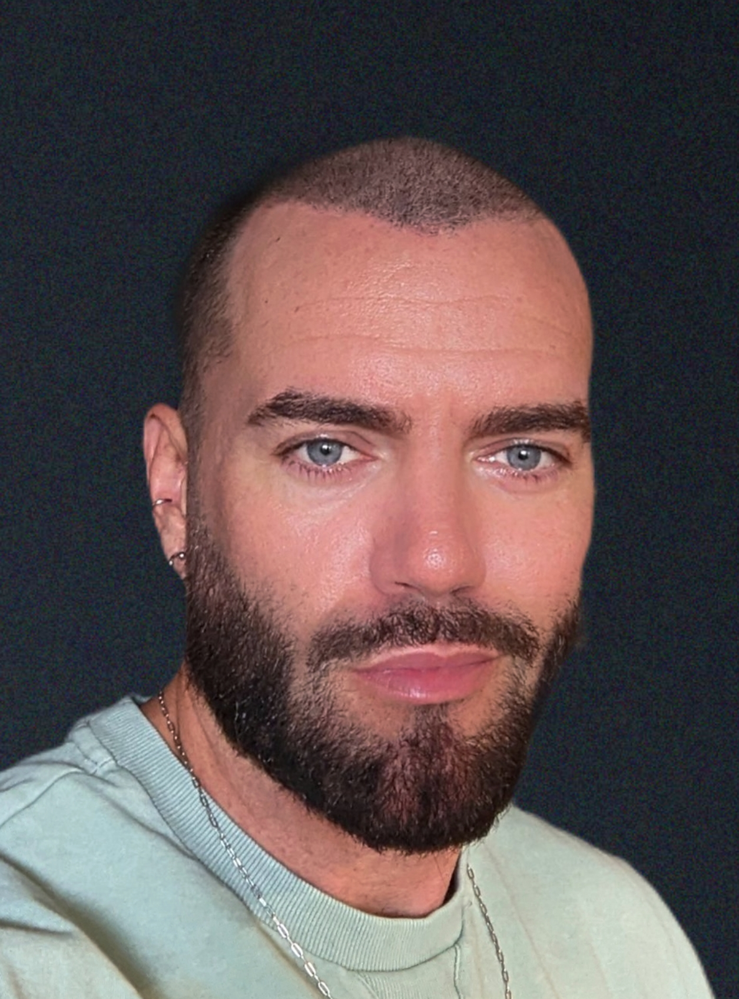

My Resume

Alexandre Gagné
Summary
Enthusiastic and detail-oriented junior programmer with a solid foundation in
computer science and programming principles. Adept at problem-solving and
collaborating in team environments. Proven ability to quickly learn new technologies
and apply them to real-world projects. Eager to contribute to dynamic software
development teams and enhance technical skills in a professional setting.
Education
- Udemy / Web development bootcamp
December 2023 - May 2024
- Lasalle College / AEC in multimedia integration
August 2019 - February 2020
- EPSOM / Land Surveyor
October 2005 - September 2007
Work Experience
- Telus International / Dialog Designer
December 2021 - Present
- Dialog Flow Design: Expertise in designing coherent and user-friendly conversation paths.
- User-Centered Design: Dedication to understanding user needs and preferences to shape dialog experiences.
- Cross-Functional Collaboration: Proven ability to work collaboratively with developers, UX/UI designers, and stakeholders.
- Continuous Improvement: Commitment to refining and optimizing dialog designs based on user feedback and analytics.
- Space For Life, Montreal scientific museums / Project and events manager
April 2013 - January 2021
- Proven track record of planning and executing successful events, from workshops and exhibitions to public lectures and outreach programs.
- Skilled in overseeing projects from conception to completion, ensuring alignment with organizational goals and timelines. Experience in budget management and resource allocation.
- Proficient in cultivating relationships with internal and external stakeholders, including scientists, educators, and community partners, to enhance collaboration and program effectiveness.
Skills
- Familiar with HTML, CSS, and JavaScript.
- Basic knowledge of SQL and database concepts.
- Experience with Git for code versioning.
- Strong analytical and critical thinking skills.
- Proven track record of planning and executing successful events.
- Ability to infuse creativity and innovation into projects and events.
- Exceptional organizational skills with meticulous attention to detail.
- Strong communication and interpersonal skills.
- Ability to adapt to dynamic and fast-paced environments.